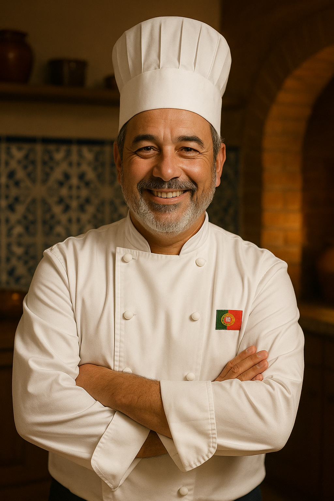

About Us

At O Sabores de Azores, we are passionate about bringing the authentic
flavours of Portugal to your tastebuds. Founded by a loving Portuguese family with a deep passion
for traditional cuisine, our restaurant celebrates the rich culinary heritage of our homeland.
We always use the freshest ingredients and traditional recipes to create an unforgettable dining experience.
Our Mission
Our mission is to provide a warm and welcoming atmosphere where guests can enjoy genuine Portuguese cuisine
while experiencing the spirit and hospitality of Portugal. Additionally, head chef Francesco works diligently to
maintain an accommodating menu, allowing everyone to enjoy what O Sabores de Azores has to offer.
Our Location
Located in the heart of Ponta Delgada on the island of São Miguel, our restaurant is the perfect place for casual
meals, family gatherings, and special occasions. We look forward to welcoming you to O Sabores de Azores
to share the true taste of Portugal with you.